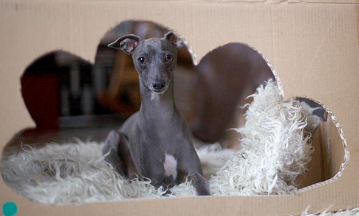

Pinterest
Instagram
ES
EN
DE
☰ Menu
Home
The House
Accessories
Decorate
Instruccions
Illustration
Custom water bottles
Notebook crafts and activities 01
App NOT ONLINE RIGHT NOW
Blog
Holidays
Christmas
Easter
Halloween
Carnival & costumes
Valentine’s Day
Birthday
Mother’s/Father’s Day
Back to school
Seasons
Spring
Summer
Autumn
Winter
What to do
Toys
Games
Printables
Food & recipes
Decoration
Painting
Experiments
Outdoors
Learning
Animals
Gifts & jewellery
Building & tricks
Other crafts
Material
Paper
Cardboard
Paper rolls
Recycling
Stones
Leaves & nature
Fabric & sewing
Holidays
Christmas
68
Easter
43
Halloween
26
Carnival & costumes
36
Valentine’s Day
15
Birthday
13
Mother’s/Father’s Day
4
Back to school
10
Seasons
Spring
19
Summer
42
Autumn
22
Winter
32
What to do
Toys
79
Games
125
Printables
47
Food & recipes
95
Decoration
96
Painting
64
Experiments
19
Outdoors
64
Learning
67
Animals
113
Gifts & jewellery
89
Building & tricks
81
Other crafts
46
Material
Paper
94
Cardboard
61
Paper rolls
23
Recycling
121
Stones
33
Leaves & nature
53
Fabric & sewing
42
Latest posts
Activity
His name on the wall
Juguete
Papier-mâché toadstool
Decoración
Golden wall organizer
Fruit
Apple duck
Activity
Chestnut figures
Occasion
Chestnuts with faces
Toy
Cork boats for puddles
Activity
Relief panda wall decoration
Halloween
Activity
Ferran's Halloween drawings
Activity
Cat bookmark
Occasion
Bats in a shop window
Occasion
Doll's Halloween costume
Halloween
Last-minute garlic ghosts
Halloween
Halloween eyeball necklace
Occasion
Apple shrunken heads
Occasion
Nerea's spider web
See all
Christmas
Occasion
Santa's laundry
best of
My favourite Christmas crafts
Activity
Photo shoot with Lu

Christmas
Raindrop Advent calendar
Occasion
Gingerbread man gift tags
Occasion
6 Advent calendars
Paint
CD case calendar
Occasion
Happy New Year
See all
Carnival & costumes
Juguete
Papier-mâché toadstool
Costume
Headband antennae
Costume
My favourite costumes
Occasion
Doll's Halloween costume
Eastern
Easter egg costume
Costume
Costume wings
Occasion
Acorn angels
Costume
Plaster masks in progress
See all
Valentine’s Day
Material
Cactus Valentine's card
Occasion
Candy heart necklace
Occasion
Valentine's cheesecake
Occasion
Hidden heart muffin
Food
Peach with a heart
Food
Jam heart cookies
Heart
Message in a nutshell
Heart
Valentine's heart
See all
Easter
Occasion
My top 10 Easter crafts
Occasion
Magazine strip bunny
Occasion
Eggshell cacti
Occasion
No-sew bunny bags
Occasion
Happy Easter!
Printables
Easter snails
Occasion
Tattooed eggs
Eastern
Josefa's Easter mona
See all
Mother’s/Father’s Day
Occasion
Happy Mother's Day
Occasion
A message for the grandmothers
Occasion
Mother's Day
Occasion
Kisses by post for Mother's Day
See all
Back to school
Fruit
Back to school: banana
Activity
Back to school: paper clips
Activity
Back to school: numbers
Activity
Back to school: names in noodle letters
Paint
Who's looking out of the porthole?
Activity
Pocket abacus
Activity
School cones in action
Activity
Sorting numbered stones
See all
Full blog